한식
한식 양식
양식 중식
중식 일식
일식 분식
분식제주도 주요 맛집 BEST 3
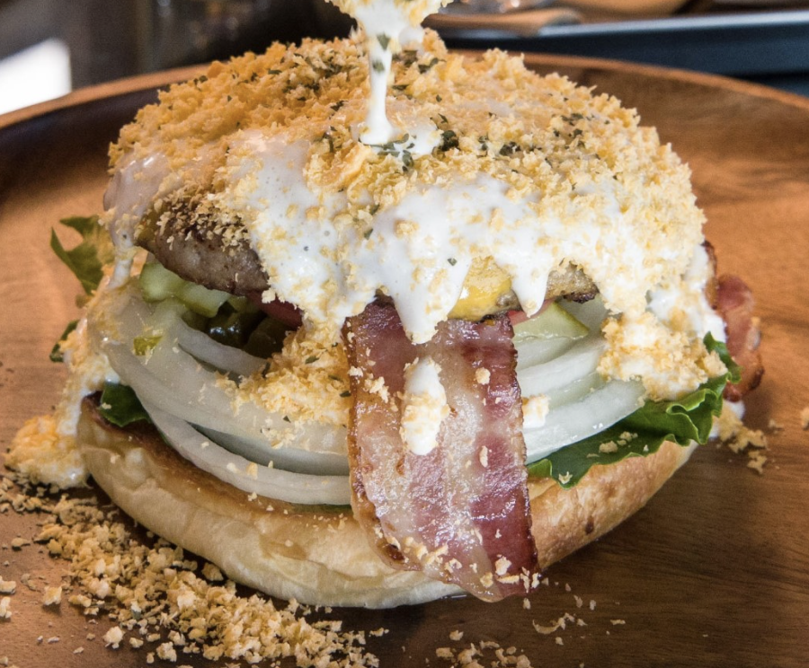
- 제주판타스틱버거
- 주소 : 제주 서귀포시 표선면 토산중앙로15번길 6
- Tel : 0507-1339-6990
- 소개 : 수제버거전문점 판타스틱입니다. 식사 하시는 동안 편안하고 멋진 분위기가 맛을 더한다고 생각해요. 계시는 시간내 가장 편안하게 쉬다 가실수있도록 최선을 다할게요!
- 네이버맵평점 : 4.55
- 카카오맵평점 : 4.1
- 바로가기
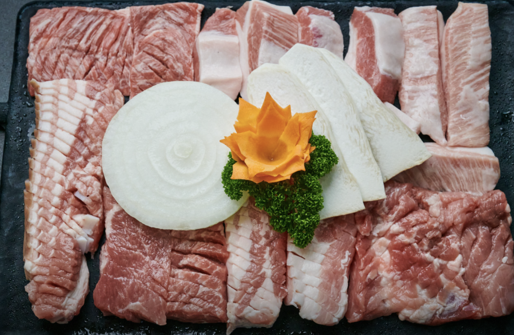
- 신우성흑돼지
- 주소 : 제주 서귀포시 중문관광로72번길 29-9 신우성흑돼지
- Tel : 064-738-7830
- 소개 : 제주도 흑돼지 1+등급만 고집하며 제주흑돼지 매일매일 숙성된 고기를 정성을 담아 준비합니다 위치로는 서귀포 중문 중문관광단지 내 가운데에 위치하고 있습니다.
- 네이버맵평점 : 4.62
- 카카오맵평점 : 4.4
- 바로가기
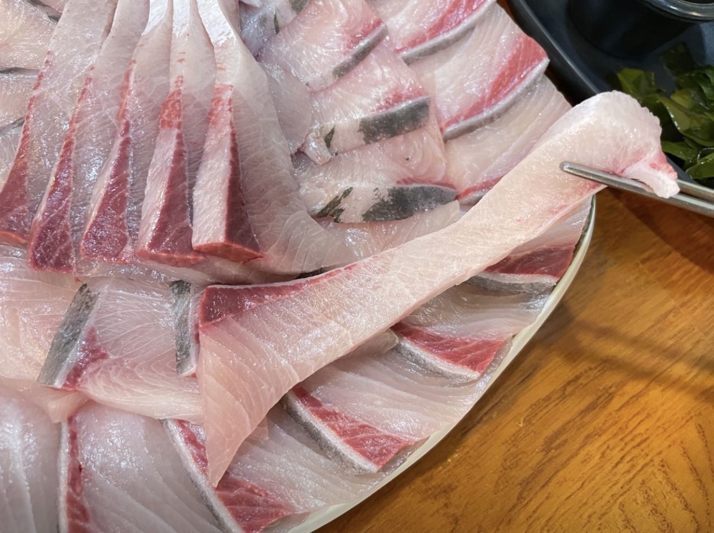
- 미영이네
- 주소 : 제주 서귀포시 대정읍 하모항구로 42
- Tel : 064-792-0077
- 소개 : 모슬포항앞에 위치한 고등어회, 방어회,여름에는 물회를 많이 드시러 오는 소박하지만 손맛 좋은 식당입니다. 특히 고등어회는 미영이네에서만 맛볼 수 있는 특제 야채양념장과 고등어회 그리고 원초가 좋은 김과 함께 드시면 그 맛에 많은 분들이 반하시고 또 고등어회를 드시고 난 후 나오는 고등어탕때문에 고등어회를 드시는 분들도 계시답니다.
- 네이버맵평점 : 4.53
- 카카오맵평점 : 4.3
- 바로가기
제주도 주요 한식 맛집
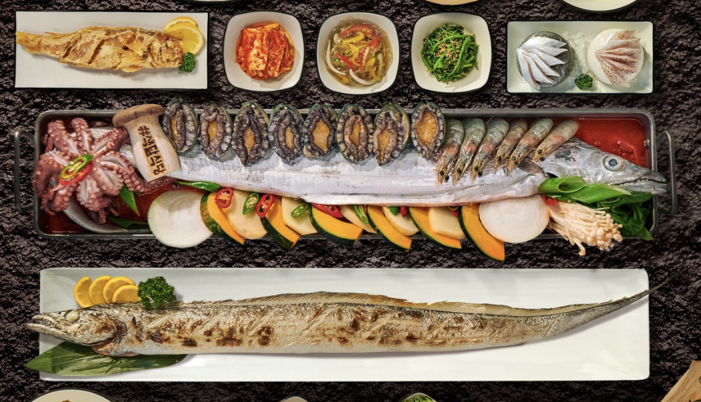
- 색달식당중문갈치조림구이 본점
- 주소 : 제주 서귀포시 예래로 255-18 1층
- Tel : 0507-1321-1741
- 소개 : 중문통갈치조림은 조미료가 전혀 들어가지 않아서 천연재료로만 만들고 있어요 서귀포갈치조림으로써 제주갈치구이와 제주통갈치조림은 색달식당입니다.색달식당 중문갈치조림구이 본점은 제주산은 갈치만 을 사용합니다. 제주 앞바다에서 잡은 제주도 갈치입니다 꼭 들려서 맛있는 통갈치조림과 구이로 건강한 여행하세요.
- 네이버맵평점 : 정보없음
- 카카오맵평점 : 4.4
- 바로가기
- 신우성흑돼지
- 주소 : 제주 서귀포시 중문관광로72번길 29-9 신우성흑돼지
- Tel : 064-738-7830
- 소개 : 제주도 흑돼지 1+등급만 고집하며 제주흑돼지 매일매일 숙성된 고기를 정성을 담아 준비합니다 위치로는 서귀포 중문 중문관광단지 내 가운데에 위치하고 있습니다.
- 네이버맵평점 : 4.62
- 카카오맵평점 : 4.4
- 바로가기
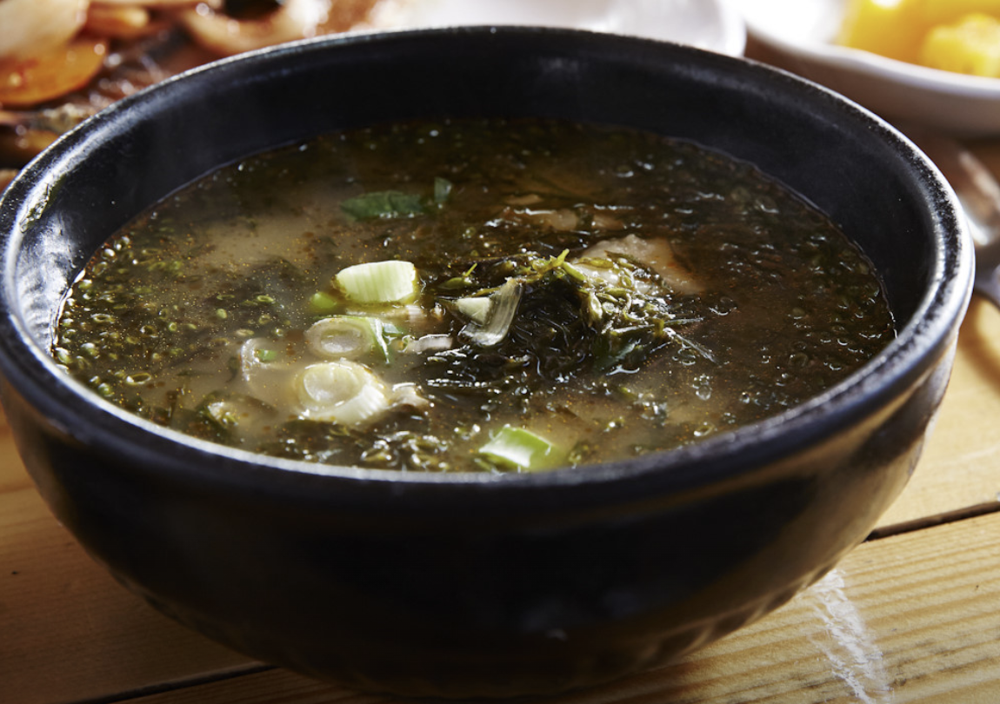
- 김희선제주몸국
- 주소 : 제주 제주시 어영길 45-6
- Tel : 064-745-0047
- 소개 : 용담 해안도로에 자리잡은 제주 향토 음식인 몸국 전문 한식당입니다. 돼지 사골을 넣고 20시간 이상 푹 고아낸 육수에 몸이라는 해초류를 일컫는 제주 사투리인 모자반과 수제비를 넣고 끓여 뚝배기에 담아내는 몸국이 대표 메뉴입니다.
- 네이버맵평점 : 4.47
- 카카오맵평점 : 4.1
- 바로가기
제주도 주요 양식 맛집
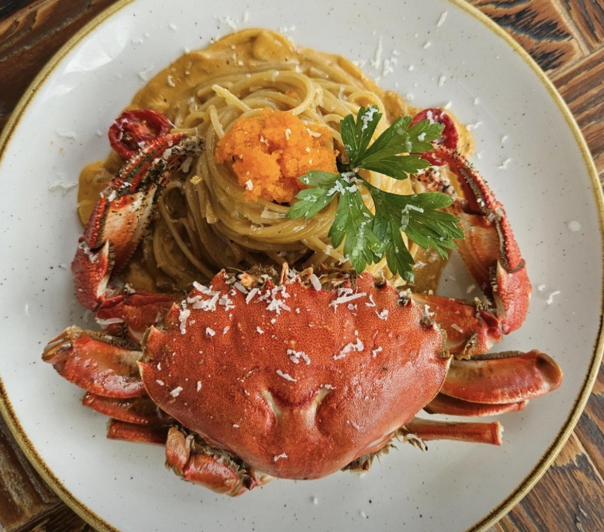
- 만월당
- 주소 : 제주 제주시 구좌읍 월정1길 56
- Tel : 0507-1381-5911
- 소개 : 유니크 한 카페 만월당. 인생리조또로 거듭난 전복리조또 및 파스타로 제주도 대표 맛집으로 거듭나기 위해 최선을 다합니다. 연중무휴 오전 11시 오픈하여, 저녁 7시 라스트오더, 8시까지 식사가능!
- 네이버맵평점 : 4.56
- 카카오맵평점 : 4.0
- 바로가기
- 제주판타스틱버거
- 주소 : 제주 서귀포시 표선면 토산중앙로15번길 6
- Tel : 0507-1339-6990
- 소개 : 수제버거전문점 판타스틱입니다. 식사 하시는 동안 편안하고 멋진 분위기가 맛을 더한다고 생각해요. 계시는 시간내 가장 편안하게 쉬다 가실수있도록 최선을 다할게요!
- 네이버맵평점 : 4.55
- 카카오맵평점 : 4.1
- 바로가기

- 월정리 이런날엔
- 주소 : 제주 제주시 구좌읍 해맞이해안로 1000 2층 이런날엔
- Tel : 0507-1357-8013
- 소개 : 조선호텔 15년 경력의 셰프로써 주방 위생 및 재료의 신선도와 품질을 엄격하게 관리하고 있습니다.
- 네이버맵평점 : 4.84
- 카카오맵평점 : 4.7
- 바로가기
제주도 주요 중식 맛집
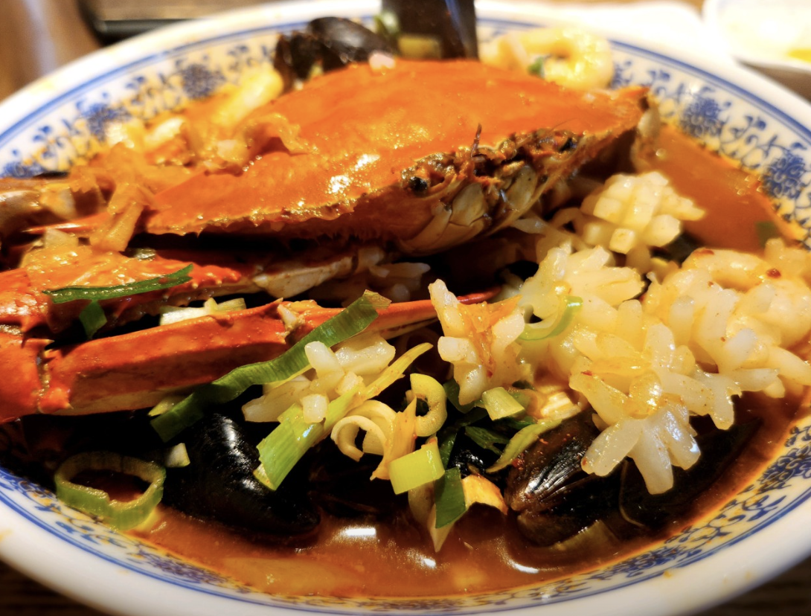
- 홍성방
- 주소 : 제주 서귀포시 대정읍 하모항구로 76
- Tel : 064-794-9555
- 소개 : 정보없음
- 네이버맵평점 : 4.5
- 카카오맵평점 : 4.3
- 바로가기

- 하르방짬뽕
- 주소 : 제주 제주시 애월읍 하귀동남4길 4
- Tel : 064-723-9959
- 소개 : 정보없음
- 네이버맵평점 : 4.33
- 카카오맵평점 : 4.2
- 바로가기
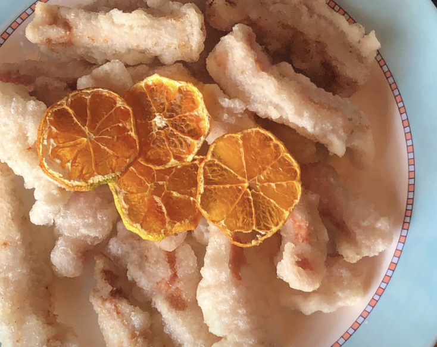
- 론푸드차이나
- 주소 : 제주 서귀포시 천제연로208번길 3 김상증외과의원
- Tel : 064-738-0048
- 소개 : 정보없음
- 네이버맵평점 : 4.38
- 카카오맵평점 : 4.2
- 바로가기
제주도 주요 일식 맛집
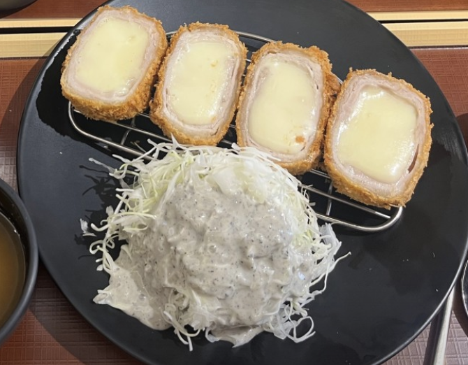
- 연돈
- 주소 : 제주 서귀포시 색달로 10
- Tel : 0507-1386-7060
- 소개 : 정보없음
- 네이버맵평점 : 4.58
- 카카오맵평점 : 3.9
- 바로가기
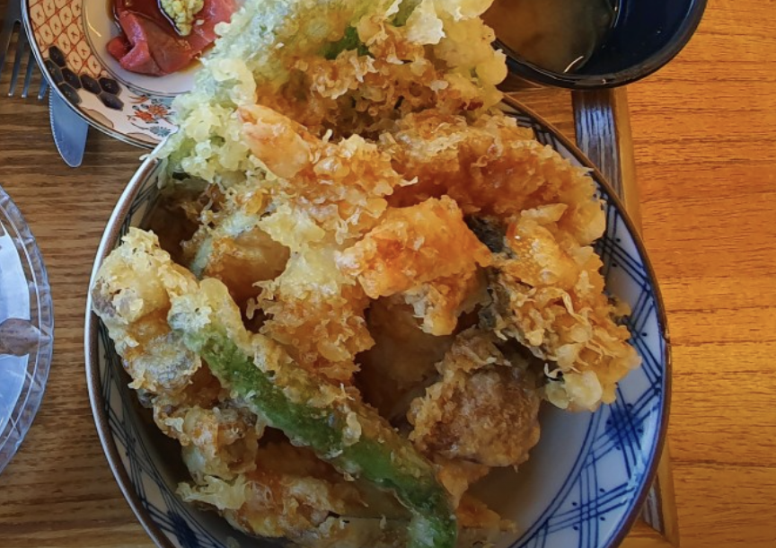
- 잇칸시타
- 주소 : 제주 제주시 애월읍 신엄안2길 54-1 1층
- Tel : 064-713-5450
- 소개 : 식사와 요리 술이 함께 하는 일본가정식 전문점입니다. 기본상차림으로 차돌숙주복음 닭안심카츠 마제우동 미소드레싱생선구이 와 유자절임배추 참깨드레싱두부 우엉무침 깍뚜기가 기본 찬으로 나갑니다.
- 네이버맵평점 : 정보없음
- 카카오맵평점 : 4.3
- 바로가기
- 미영이네
- 주소 : 제주 서귀포시 대정읍 하모항구로 42
- Tel : 064-792-0077
- 소개 : 모슬포항앞에 위치한 고등어회, 방어회,여름에는 물회를 많이 드시러 오는 소박하지만 손맛 좋은 식당입니다. 특히 고등어회는 미영이네에서만 맛볼 수 있는 특제 야채양념장과 고등어회 그리고 원초가 좋은 김과 함께 드시면 그 맛에 많은 분들이 반하시고 또 고등어회를 드시고 난 후 나오는 고등어탕때문에 고등어회를 드시는 분들도 계시답니다.
- 네이버맵평점 : 4.53
- 카카오맵평점 : 4.3
- 바로가기
제주도 주요 분식 맛집
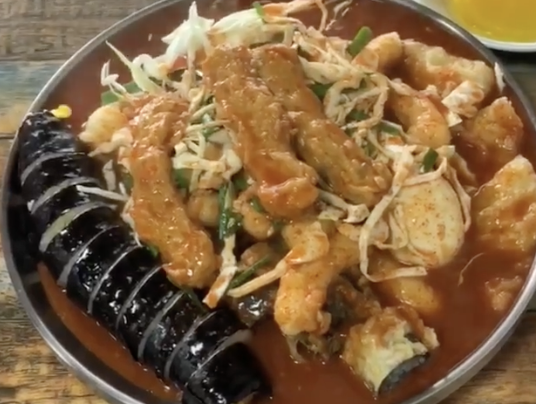
- 짱구분식
- 주소 : 제주 서귀포시 중동로48번길 3
- Tel : 064-762-6389
- 소개 : 정보없음
- 네이버맵평점 : 4.4
- 카카오맵평점 : 3.9
- 바로가기
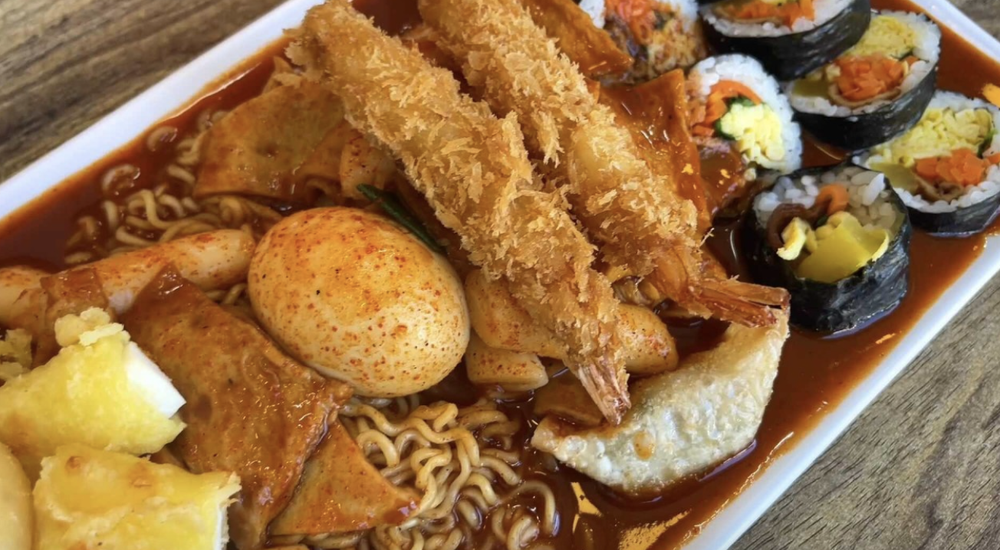
- 모닥치기
- 주소 : 제주 제주시 남광로2길 17
- Tel : 0507-1345-5632
- 소개 : 김밥,떡볶이,순대,돈가스, 라면,라볶이,모닥치기
- 네이버맵평점 : 4.5
- 카카오맵평점 : 4.2
- 바로가기

- 은갈치김밥
- 주소 : 제주 제주시 용마서길 30
- Tel : 064-747-2971
- 소개 : 정보없음
- 네이버맵평점 : 4.45
- 카카오맵평점 : 4.5
- 바로가기